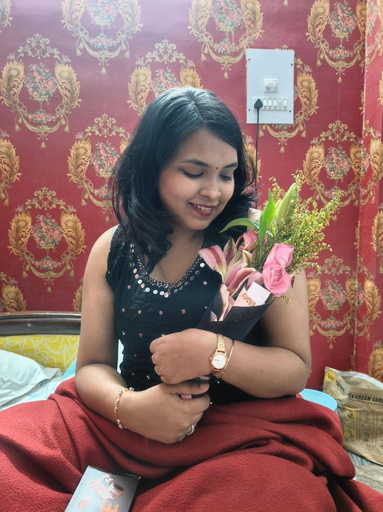

A little reminder
To my Bby ♡
If I could give you one thing in this world, it would be the ability to see yourself through my eyes. Only then would you understand just how special you are.
You are my favourite kind of magic.
Somewhere in this world, someone makes life a little more beautiful just by existing. This little corner of the internet is for her.
Made with all my love, Bby.
To my Sunshine 🌻
MY FAVOURITE HUMAN · MY HAPPIEST PLACE
November 20 · A day as lovely as you
If I could give you one thing in this world, it would be the ability to see yourself through my eyes. Only then would you understand just how special you are.
You are my favourite kind of magic.
Close your eyes, wish for something beautiful, then tap the cake.
The candle is lit — tap the cake to blow it out and make your wish.
Wish made ♡
I hope every wish of yours comes true: the secret ones you never say out loud and only whisper to God, and the ones you rant about all the time too. 🥰✨🤭
Six little wishes to carry with you from today ✨
Here's to you, Sakshi 🥂
Officially voted, certified and presented to the birthday girl 🏆
since 29 November 2025, 6:46 PM ♡
A few of my favourite pieces of us ♡

A memory I never want to forget 💗Drag the photos, or tap any photo to bring it to the middle ♡
Hey Sunshine, 🤍
If I could, I’d honestly come running to you right now. One tight hug, and I’d just stay there till you stopped missing me so much.
Till that happens, close your eyes for a second, okay? Picture me holding you close, playing with your hair, telling you the same thing I always tell you. You mean so much to me.
I miss us too, you know. Our little moments, the talks that never seem to end, our night drives, your smile. Even those sleepy video calls where we both slowly drift off.
I wish missing me just meant I was right there beside you. That would make this so much easier.
But till we meet again, just know this, my Sunshine. However far apart we are, a little piece of my heart is always right there with yours.
Counting down to my next hug.
I wish I was right there with you just now. I’d hold your hand, hug you tight and just sit with you till things felt a little lighter.
Since I can’t be there, hear me out. You don’t have to be happy all the time. And you really don’t have to pretend you’re okay when you’re not. Cry if you need to. Feel overwhelmed if that is what today feels like. Take some time just for yourself, that’s completely okay.
I hope you never forget how special you are, even on the days when you can’t see it yourself. I’m proud of you, Bby. Not just on the days you shine, but on the quiet, hard days too, the ones where you fight battles nobody even knows about.
So please, be gentle with yourself, my Sunshine. Take a deep breath. Today is just one bad moment, it’s not your whole life, and you don’t have to figure everything out today.
And if it all feels too heavy, you know where I am. I’ll listen to you, hold you, and keep reminding you how loved you are, as many times as you need to hear it.
You don’t have to get through days like this alone. I’m always in your corner.
Hey bbe, 🥺
Still awake, huh? I know your mind just won’t switch off tonight. So let’s slow it all down together.
Breathe in with me. Now let it out, slowly. Whatever you were planning to solve tomorrow, it can wait. None of it needs you tonight.
Think of something that makes you smile. Then think of me, thinking of you, wishing I was right there playing with your hair till your eyes slowly closed. Just like our sleepy video calls, where we drift off together without even realising it.
Whatever is keeping you up will still be there in the morning. So will I. You don’t have to carry all of it tonight, okay?
Close your eyes now, my Sunshine. Sleep well, sweet dreams, and I’ll be right here when you wake up. 💗
Hey love, ☕
Go on, get that extra dark cold coffee. You deserve it. Today you deserve it twice.
First sip, deep breath. There you go. Whatever today is throwing at you, you’ve handled harder days than this, and you’ll handle this one too.
Somewhere there is someone who is so proud of you, and who wishes he was sitting right next to you just now, stealing a sip and listening to every little thing about your day.
Take your time with that coffee, be gentle with yourself, and then go show everyone how amazing you are. I’m right here, cheering for you. 🤍
Hey Sunshine, 🤍
Just a quick reminder from me. Your smile is my favourite thing in the whole world. And yes, somewhere right now I’m probably smiling just thinking about yours.
Think of our funniest moments for a second. My silliest jokes, the ones that weren’t even that good, and all those times we just couldn’t stop laughing together. Hold on to that feeling for a bit.
Now smile for me, Bby. See? That’s better already. 💗
Listen to me properly, my love. You are enough. Exactly as you are, you really are.
On the days you doubt yourself, borrow my eyes for a moment. Because when I look at you, I see someone beautiful and strong and kind, someone I could never replace.
Nothing you worry about changes that. It doesn’t change how I see you, and it doesn’t change how proud I am to have you in my life. Always. 🤍
Look, you’ve got through every hard day life has given you so far. Every single one of them. This one isn’t going to be the one that stops you.
Just take it one small step at a time. Rest if you need to, that’s allowed, but please don’t give up on the dreams you told me about. I believe in those dreams, and I believe in you.
And whatever happens next, you won’t be doing it alone. I’m with you in this, always. 🌻
I hope one day everything comes together for us, and I get to thank God for making you a part of my life.
Always my Sunshine 🌻
days until I see you ♡
I recorded something just for you.
You can claim all of them, whenever you want. 🤍
There's a little gift waiting for you, Bby.
If I had to choose all over again, I'd still want to know you, laugh with you, care for you and make beautiful memories with you.
You will always be so very special to me.
🤍May your world always be as beautiful as your heart.
Forever sending you love ♡
Happy Birthday, Baccha. Always my Sunshine 🌻